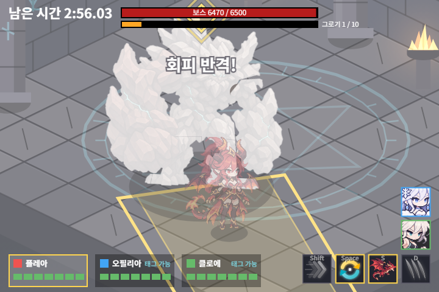
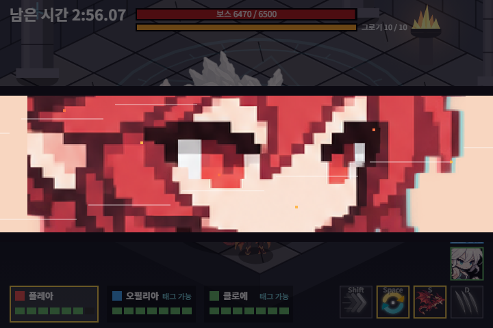
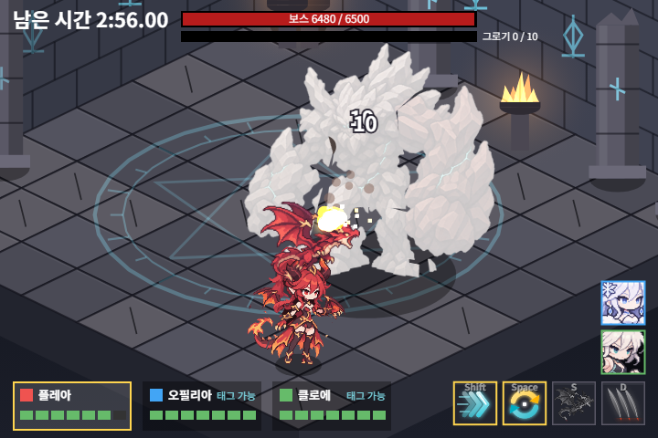
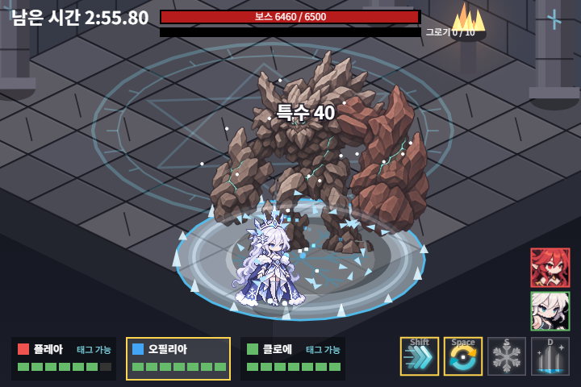
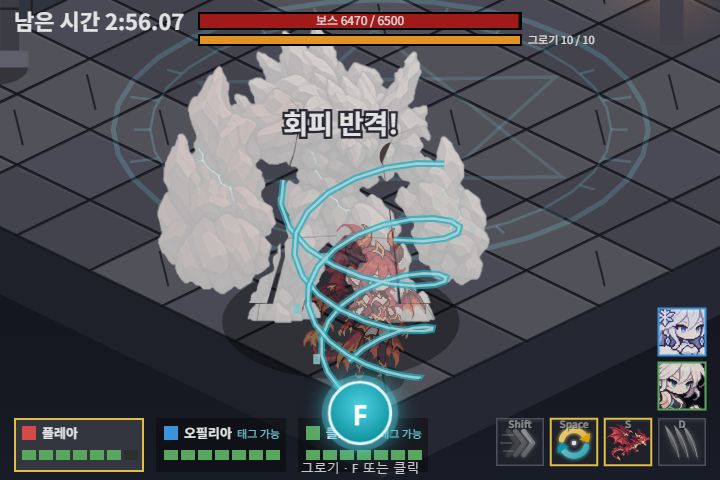
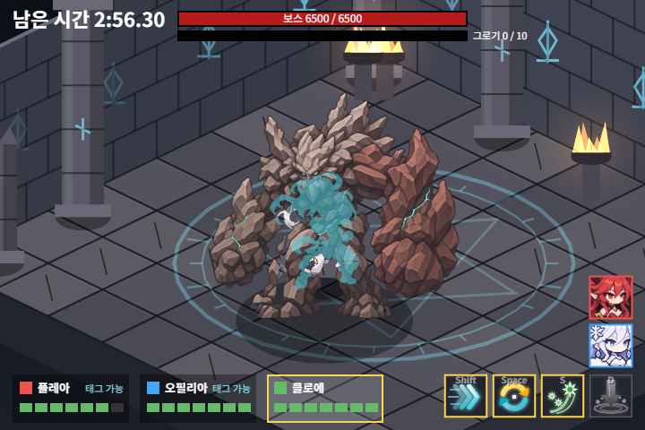

그래픽 작업의 역할 재분배
- AI가 그린 단순한 캐릭터 옆에 제가 만든 세밀한 보스가 놓여 그림체가 어울리지 않았습니다.
- AI는 좌표로 그리는 방식으로는 레퍼런스만큼 세밀한 그림을 약속할 수 없다고 한계를 설명했습니다.
기다려봐. 내가 그림 줄게
캐릭터 셋을 직접 만들어 전달했고, AI는 팔·다리·날개·꼬리를 나눠 걷기와 공격 동작을 붙였습니다.
결정 기록 · 배운 것 장부
몬길: 스타다이브의 보스전 핵심인 태그 반격을 3분 분량의 한 판으로 재구성했습니다.
이 페이지는 게임 자체보다 AI와 함께 일한 방식에 초점을 둡니다. 사람과 AI의 역할을 어떻게 나누었는지, 문제를 어떻게 정의하고 나누었는지, 시행착오를 거치며 AI 활용 방식을 어떻게 발전시켰는지를 정리했습니다.







코드 작성과 수정은 AI에게 맡기고, 무엇을 만들지와 완성 여부는 제가 판단했습니다. 그 사이에 AI가 스스로 수행하는 검토와 자동 검사를 두어 결과물을 이중으로 확인했습니다.
작업 규칙 파일(CLAUDE.md)과 세 가지 명령, reviewer 역할을 기반으로 일했습니다. 규칙 파일은 제 승인 없이 AI가 수정할 수 없습니다.
단계마다 완료 기준을 정하고, 기준을 충족해야 다음 단계로 넘어갔습니다. 각 단계의 결과는 문서로 남겼습니다.
원작에서 구현할 재미의 한 조각을 고르고, 관찰한 것과 추정한 것을 구분해 정리했습니다 (reverse.md). 원작 정보는 기사와 위키로 확인된 것만 "확인"으로 표시했습니다.
상황·문제·목표를 직접 쓰고, AI와 함께 14줄의 완료 기준으로 다듬었습니다 (problem.md). reviewer 검토를 세 차례 거쳐 지적 사항 16개, 10개, 6개를 모두 반영하거나 결론을 냈습니다.
핵심 게임 루프를 한 문장으로 정리하고, 한 시간 안팎의 작업 8개로 나누었습니다 (tasks.md). 작업 목록은 완성 시점에 40개가 되었습니다.
첫 판을 만들어 웹 링크로 배포하고, 다른 기기에서 열리는 것을 확인했습니다. 작업마다 그 시점의 판을 steps/ 폴더에 보관해 36개의 기록이 남았습니다.
플레이 소감 하나를 작업 하나로 연결했습니다. 처음 해 보는 테스터 두 명이 설명 없이 한 판을 완주했습니다.
README를 작성하고, 회고를 통해 다음 게임의 발전 사항을 정했습니다.
회피랑 태그가 가능한 시간이 생각보다 촉박→ 반격 가능 시간을 0.5초에서 0.8초로 조정
패턴을 보고 걸어서 피할 수 있을 정도→ 바닥의 공격 범위를 마지막 0.4초에만 표시
마름모가 너무 조잡→ 마름모를 다시 그리고, 꽉 차는 순간을 공격 순간에 맞춤
같은 유형의 문제가 생기면 바로 기록하고, 두 번째부터는 일하는 방식 자체를 바꿨습니다.
보스 바로 옆에서 쉬지 않고 공격하는 봇 하나로 클리어 시간을 맞췄습니다. 직접 해 보니 체감 난이도가 봇 결과와 크게 달랐습니다.
처음 하는 사람 수준(반응 성공률 0.3 이하)과 걸어서 피하는 플레이를 흉내 내는 봇을 함께 측정하도록 규칙을 정했습니다. 이후 난이도를 잘못 판단한 일은 없었습니다.
캐릭터, 마름모, 스킬 이펙트, 아이콘을 AI가 좌표로 그렸습니다. 레퍼런스 수준의 퀄리티에 미치지 못해 여러 번 다시 작업했습니다.
레퍼런스를 찾아 AI 이미지 도구로 캐릭터·보스·용을 직접 만들고, AI는 그림을 부위별로 나눠 관절 애니메이션을 붙였습니다. 회고에서 "AI가 그릴 그림이 사용자 그림 옆에 놓이면 먼저 사용자 그림을 받을지 묻는다"를 규칙으로 추가했습니다.
캐릭터가 걷는 방향과 반대를 바라보는 버그가 여러 번 나왔습니다. AI가 그림의 원래 방향을 눈으로 짐작한 것이 원인이었습니다.
그림의 방향은 제가 확인한 값만 쓰게 하고, 그 값을 지키는 검사 10개를 넣었습니다. 잘못된 값으로 바뀌면 검사가 바로 실패합니다.
게임 1의 일시정지 기능은 게임 1 코드 안에만 있었습니다.
직접 제안한 규칙입니다. 일시정지와 시작 화면 메뉴를 templates/에 원본으로 두고, 게임마다 복사해 각 게임에 맞게 고쳐 씁니다.
게임 하나를 끝낸 뒤 다음 게임으로 넘어갔습니다.
게임 2를 다듬는 창과 게임 3을 기획하는 창을 함께 운영했습니다. 두 창이 같은 기록 파일을 다루므로, 저장할 때는 각자 맡은 게임의 내용만 골라 저장하도록 했습니다.
제가 판단하고 AI가 구현한 사례와, AI가 스스로 문제를 찾거나 자동으로 막아 낸 사례입니다. 인용은 작업 중 결정 기록에 남은 제 말입니다.
기다려봐. 내가 그림 줄게캐릭터 셋을 직접 만들어 전달했고, AI는 팔·다리·날개·꼬리를 나눠 걷기와 공격 동작을 붙였습니다.
결정 기록 · 배운 것 장부
뒤로 가면 반투명이 아니라 실루엣만 보이게처리하기로 정했고, AI가 구현했습니다.
작업 목록 · 결정 기록
플레이 메모 · 결정 기록
작업 목록 · 결정 기록
check/g2check.js
배운 것 장부
배운 것 장부
작업 목록
AI가 틀린 부분은 즉시 기록하고, 같은 유형이 두 번 나오면 규칙 한 줄을 제안받아 제가 승인한 것만 반영했습니다. 회고 때는 규칙을 넣은 뒤 같은 문제가 줄었는지 세어 효과를 판정했습니다.
| 반복된 문제 | 반영한 규칙 | 판정 |
|---|---|---|
| 봇이 사람과 다르게 움직여 난이도를 잘못 판단 | 봇 측정값에 "봇 기준"을 표시하고, 초보자 수준과 걸어서 피하는 봇도 함께 측정 | 효과 있음 |
| 문서에 바뀌기 전 내용이 남음 | 기획 문서가 바뀐 날에도 저장 전에 reviewer 검토를 제안 | 효과 있음 |
| AI가 그린 그림이 기대와 다름 | 기존 그림과 그림체를 비교하고, 다르면 미리 알림 | 효과 없음 |
| 위 규칙의 보완 | AI가 그릴 그림이 사용자 그림 옆이면 먼저 사용자 그림을 받을지 질문 | 다음 회고에서 판정 |
| 편의 기능을 게임마다 새로 만듦 (직접 제안) | 편의 기능은 templates/ 원본을 복사해 게임별로 수정 | 다음 회고에서 판정 |
| 문서마다 같은 대상을 다른 단어로 부름 (직접 요청) | 제 말을 문서에 옮길 때 기존 문서와 다른 단어를 찾아 보고 | 다음 회고에서 판정 |
| 캐릭터 방향 버그 반복 | 규칙 대신 자동 검사로 차단 | 검사로 전환 |
효과가 없었던 규칙도 지우지 않고 남겼습니다. 미리 알리는 것만으로는 부족하다는 것을 확인했고, 그 결과가 다음 규칙으로 이어졌습니다.
게임의 전체적인 기획 및 이후 수정 및 자가 피드백. 피드백은 AI로 먼저 한 후, 직접 플레이하면서 다시 한 번 확인하는 재검수의 절차를 거쳤다.
이번 게임에서 새로 할 수 있게 된 것: 보다 복잡한 시스템 구현 및 핵심 재미 요소 확인
원작은 몬길: 스타다이브 (개발 넷마블몬스터, 배급 넷마블)입니다. 이 게임은 개인 학습용으로 만들었으며 원작의 그림과 소리는 사용하지 않았습니다. 위 화면은 실제 게임을 실행해 찍은 장면입니다. PC 키보드로 플레이합니다.